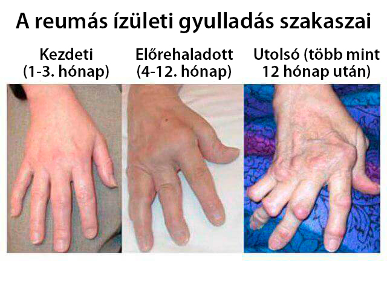
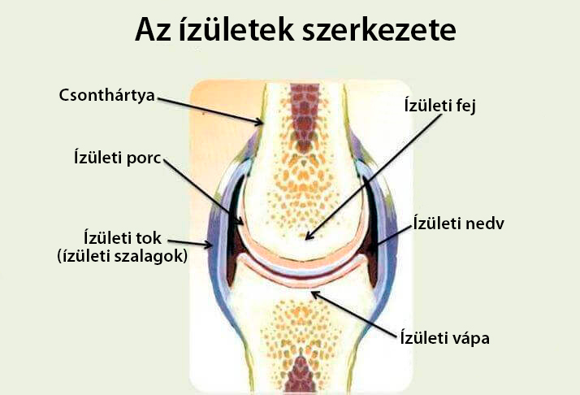
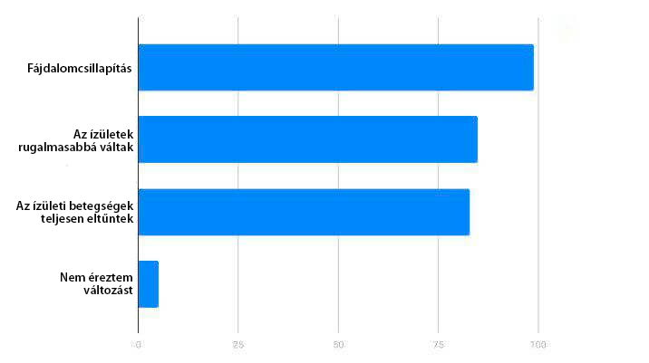

"Az orvostudománynak hozzáférhetőnek kell lennie."
A magyar Reumatológiai Intézet
elnöke egy egyszerű és megfizethető készítményről beszélt, amely tartósan gyógyíthatja az ízületeket.
Rátkai Viktor
magyar reumatológus, orvos és professzor, ор, A
„Magyar Reumatológusok Szövetségének“ elnöke, a Szegedi Orvostudományi Egyetem Reumatológia
tanszékének vezetője
,
több mint 500 publikáció szerzője vagy társszerzője, többek között monográfiát is
írt.
Tapasztalat: több mint 30 év.
Rátkai Viktor úgy véli, hogy a legtöbb reumatológus hozzáállása az ízületi betegségek kezeléséhez, például az ízületi gyulladás, az arthrosis, az osteochonodrosis és más betegségek kezeléséhez, alapvetően téves. A Magyar Reumatológusok Szövetségének elnöke kijelentette, hogy a az ízületi betegségek elleni az egész szervezettel kell küzdeni.“Lehetséges a betegség visszafordítása, de ehhez ki kell használni a test belső erőit, és a modern kondroprotektorok erre nem képesek - mondta az orvos.
A Medicine News portál szerkesztői a koppenhágai konferenciája után azonnal felvették a kapcsolatot az ország reumatológusával és interjút kértek tőle, amelnek keretében az ízületek innovációs kezelési módszereiről beszéltek.
- Üdvözöljük! Most mindenki állandóan csak az ízületi betegségekről hall és beszél. Állandó beszédtéma. Ilyen sokan szenvednénk ezektől a betegségektől?
- A betegek száma hihetetlenül magas! Az ízületi betegségek a 21. század talán leggyakoribb betegségei. A statisztikák szerint a világ népességének több mint 55% -ánál megállapítható valamilyen ízületi rendellenesség. Vagyis minden második ember szenved a betegség valamelyik formájától ! És ha korábban azt mondtuk, hogy az ízületi betegségek egy nyugdíjasokat érintő problémakör, ma már ez nem igaz, ugyanis azok a fiatalokat is aktívan érintik. Mindez az életmód változása miatt van. A városok lakói "elszoktak" az egyenletes terheléstől. Valaki reggeltől estig mozdulatlan, míg mások edzőtermekben nyújtjanak egész nap, így ártva az ízületeiknek.
- Hogyan állapítható meg, hogy van-e valakinek ízületi betegsége? Milyen tünetek utalhatnak erre?
- A tünetek listája meglehetősen hosszú, de a legfontosabbak a következők:
- Fájdalom mozgás közben, valamint nyugalmi állapotban is
- Ropogás az ízületekben
- Az ember kevésbé mozgékony, merevség jelentkezik
- Az ízületek megváltoztatták a beteg megjelenését, deformáció figyelhető meg
- Kipirosodás az ízület körül
- Duzzanat az ízületek területén
- Éles fájdalom a nagy lábujjakban
- Térdfájdalmak
- Túlsúly
- Gyakori megfázás
- Az ujjak végén vagy közepén megjelenő tömlő
- Az embernek nehéz még kisebb munkákat is elvégeznie
- Genetikai hajlam
- Gyenge immunrendszer.
- A testhőmérséklet megemelkedése,
- Fokozott izzadás,
- Szapora pulzus,
- Orrvérzés,
- Hasfájás,
- Sápadtság
Ha az ember a fenti tünetek közül legalább 3-at megfigyelt magán, valamilyen ízületi betegségben szenved. Ha folyamatosan fájdalmat és merevséget érzünk, akkor az már egy riasztó jel, és azt is jelezheti, hogy az ízület bármelyik pillanatban felmondhatja a szolgálatot.
- Ha az ember ízületei felmondják a szolgálatot, meg lehet, úgymond, javítani őket? Segíthetnek-e a kondroprotektorok vagy a kenőcsök a betegség ezen stádiumában?
- A kondroprotektorok a múlt század módszerei! Nem képesek gyógyítani a betegséget, csak ideiglenesen javítják a beteg állapotát. Más tablettákról és kenőcsökről beszélni pedig nem is érdemes, az orvosok azokat azért írják fel, hogy enyhítsék a fájdalmat, ugyanis az ízületi gyulladás és az artrózis esetén a fájdalom igazán pokoli. De az ízületi betegségek gyógyíthatók! Csak nem tabletták szedésével, hanem a test belső forrásainak felhasználásával.
- Hogyan lehetséges ez?
- Elmagyarázom. Tudnunk kell, hogy amikor egy ízület "fáj", két dolog történik: vagy kezeletlen fertőzés okozza a fájdalmat, amely ízületi gyulladást okozott, vagy maga az ízület porc használódott el, vagyis az a puha kötőszövet, amely a két csont között található, és ebben az esetben már artrózisról, vagyi ízületi kopásról beszélünk. Az ízületi gyulladás gyógyításához fertőtleníteni kell az ízületet, vagyis egyszerűbb szavakkal élve, "meg kell ölni" a kórokozó mikroflóráját. Az ízületi kopás hatékony kezeléséhez viszont javítanunk kell az ízületekben való vérkeringést. Amikor helyreáll az ízületek vérállátása, az ízületek lágyszövetei tápanyaghoz és vitaminokhoz jutnak, amelyek új sejteket hoznak létre. Így helyreáll a kötőszövet.
- Hogyan lehet ezeket a folyamatokat aktiválni? Léteznek valamilyen speciális injekciók vagy beavatkozások?
Ennél ez sokkal egyszerűbb. Tavaly a Magyar Reumatológusok Szövetsége az amerikai kollégákkal együtt kifejlesztett egy innovatív szert az ízületi betegségek kezelésére. A szer új formulájába olyan értékes összetevők kerültek be, amelyeket midnig is használtak az ízületi fájdalmak kezelésére. A kutatások 5 évbe teltek és 1,8 millió dollár ment el rájuk . Ennek eredményeként viszont egy forradalmi szert fejlesztettek ki, amelynek a neve .
És milyen értékes összetevők találhatók ebben a készítményben? És hogyan hat a szer?
- A kizárólag természetes összetevőkből áll. Fő összetevője a propolisz , amelynek gyógyászati előnyeit sokáig nem vizsgálták. Ma már tudjuk, hogy a propolisz az egyik legerősebb antioxidáns, egy természetes antibiotikum, amely hatékonyan kezeli a legsúlyosabb fertőzéseket is. A propolisz fokozza a vérkeringést (éppen azt, amiről beszéltem), illetve növeli az ízületek lágyszöveteibe bejutó hasznos tápanyagok mennyiségét. Ennek köszönhetően képes helyreállítani a csont- és a porcszövetet.
A cédrusgyanta kivonat is megtalálható az összetevők között, amely megállítja a gyulladást és enyhíti a fájdalmat.
A vadgesztenye kivonat enyhíti a duzzanatot, és csökkenti a fájdalmat.
A mocsári tőzegeper kivonat egy egyedülálló és nehezen fellelhető összetevő, amely hozzájárul az új porcszövetet képzéséhez, valamint enyhíti a porc gyulladását, és növeli a lágy szövetek rugalmasságát.
A bojtorján kivonat kiválasztja a lerakódott sókat és megakadályozza újabb sók lerakódását.
A méhviasz a bőrbe való mély behatolást és tartós hatást biztosít. Ezek az anyagok együtt képesek megküzdeni az ízületek bármilyen betegségével és hatékonyan kezelik az ott kialakul problémát. Még elhanyagolt eseteknél is.
- Vagyis ez egy valóban hatékonyan készítmény. De még soha nem találkoztunk vele a gyógyszertárakban. Akkor mégis hol lehet kapni?
- Ez a szer még igazi újdonságnak számít. Csak nemrég fejezték be klinikai vizsgálatait, de már minden szükséges engedélyt és igazolást megkaptak. Egyelőre a magyar gyógyszerpiacon való megjelenés nehézségei miatt a készítmény csak a formulát és a szabadalmat felvásárló gyártó hivatalos weboldalán érhető el. A szer gyártás meglehetősen bonyolult és drága, ezért magas az ára, DE mi arra törekszünk, hogy minden magyar állampolgár egyszer és mindenkorra rendbe tehesse az ízületeit, ezért kéthavonta egyszer a Magyar Reumatológusok Szevetsége és a gyártója közösen egy jótékonysági akciót szervez: egyesületünk felvásárolja a legyártott csomagokat, hogy a magyar lakosok megvásárolhassák a készítmény 50% -os kedvezménnyel. Így elérhetővé tesszük az egyetlen eddig létező készítményt, amely valóban gyógyítja az ízületeket.
- Köszönjük az interjút, Doktor Úr!

Az új felfedezést Ajtós Sándor , egy ismert orvos, reumatológus, terapeuta és az orvostudományok doktor is kommentálta:
A valóban egy új generációs készítmény. Ilyen még nem volt a hazai
vagy a
külföldi orvoslásban. Személyesen győződhettem meg a hatékonyságáról a pácienseimmel együtt: a
fájdalmak az első használat után elmúlnak, és az ízületi gyulladást átlagosan 40-60 nap alatt
lehet vele kezelni. Ez nagyon jó eredmény.
A "Medicine News" portál szerkesztői kikérték a . klinikai vizsgálatok eredményeit, amelyek a következőt mutatták:
7984 önkéntes vett részt a vizsgálatokban.
Összehasonlítottuk a készítményt más ízületi gélekkel, tablettákkal és kenőcsökkel. Íme az eredmények (a felhasználói visszajelzések alapján):
| Egyéb gélek, kenőcsök és tabletták | ||
|---|---|---|
| Hatása: | A fájdalom okainak megszüntetése, az ízületek funkcióinak újraindítása sejtszinten | Ideiglenes fájdalomcsillapító hatás |
| További hatások: | º A véráramlás helyreállítása a megbetegedett ízületekben º Az erek megerősítése º Megszünteti a fájdalom szindrómát |
Nincs |
| Mellékhatások és a szervezetre káros hatások | Nincs | º Bőrreakciók az alkalmazás során º Pustuláris kiütések º Bronchospasticus reakciók º Erythema, dermatitis |
| Működési elv: | Javítja a véráramlást az alkalmazás területén és stimulálja az idegvégződéseket, elindítja a sejtek helyreállítását, megállítja a gyulladásos folyamatokat | Érzésteleníti az integumentumokat, gyakran nem hatol be a szükséges mélységig további ultrahangos beavatkozások nélkül, felmelegíti a bőrt, de nem éri el a szövetet (kenőcsök esetében) |
| Összetétel: | Természetes növényi összetevők és vitaminok | Diklofenák és más vegyi eredetű összetevők |
Így azon kevesek is, akik már kipróbálhatták ezt a a reumatológiai gyógyszerek piacán nem rég megjelenő teljesen új gyógymódot, egybehangzóan csak megerősíthetik, hogy a a legjobb, legbiztonságosabb, és ami a legfontosabb, a leghatékonyabb piacon elérhető szer.
A rossz elérhetőség és a iránti nagy
érdeklődés miatt a “Medicine News” portál szerkesztõi felkérték Rátkai Viktor Doktor Urat, a Magyar
Reumatológusok Szövetségének elnökét, hogy biztosítanak egy kisebb szállítményt olvasóink számára.
Az elsõ 70 olvasó 50% -os kedvezménnyel rendelheti meg a készítményt a gyártó hivatalos
weboldalán!
A készítmény kedvezményes áron csak korlátozott mennyiségben elérhető.